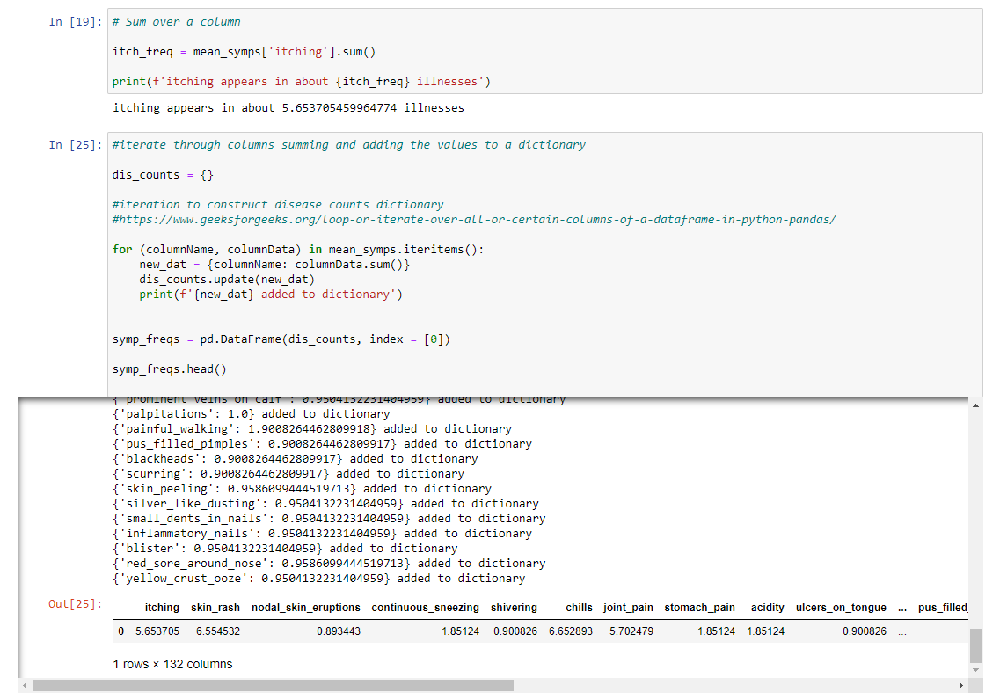

We were interested in doing a machine learning project with a biomed topic. In order
to do this we found a data set on Kaggle
that has around 5000 cases of diseases. The diseases are paired with 133 unique symptoms.
I used a Support Vector Machine algorythm implemented in Scikit-Learn to classify the diseases.
Full disclosure - code exists on Kaggle which contains similar implementations. I did not copy it
directly, though, and I think the figures I use to make sense of the results are relatively original.
The kaggle sets came with dedicated training and test sets, but in order to be rigorous, we concatenated
these and used Scikit-Learn's train_test_split function to train our data. The data comes with a column with
a nonsense heading, and null values. This was removed. The set contains duplicates, but given the context, these
are assumed to be independant cases with identical presentations rather than accidental duplications. Whereas some
of the other scientsts removed these, I kept them. Because the data was entirely binary, no scaling was done.
To assess variability of illnesses I grouped by prognosis and applied a mean function. I found that the average
symptom values were generally close to 1 or close to 0 - no symptoms appeared about half the time, or in a slight
majority or minority of the time. After training and running the test set I called the classification report from
Scikit-Learn to assess the performance of the ML algorythm.
As one can see above, the results came back literally perfect, which was strange and didn't seem realistic. Initially I had planned to implement a deep learning approach, but this didn't seem justified if SVM alone was giving perfect results. My hypothesis on seeing the results was that the perfect classification was acheived because of the large number of features. The data set contains 133 features, and only 41 categories. Since a feature is a dimension, a new feature can be used to resolve overlapping data, if clean separation exists in that feature. This means that if my hypothesis is correct, a large number of features should correspond to a small number of disease, as this will allow easy separation on those features. In order to answer whether this was occuring, I did some additional analysis.
In order to answer the question I just posted, I had to mung the data a little more. I needed sums for each of the features in my groupby.mean() object mentioned previously. Because symptoms were columns in that dataframe, I had to iterate through the columns and add the sum of each column to a dictionary which I could then make into a dataframe. I did this using the following code.
I then transposed the dataframe, because I didn't like it's geometry. I wasn't sure if it would plot correctly, but the transposed version did plot correctly. The results I got by plotting this in matplotlib left something to be desired, though, so I made the figure at the top of this section by reading the data out and using Tableau public. The results show what I had expected. Of the 133 features, more than half of them show up in only around 1 disease. This means many of these diseases can be differentiated by a single feature. One feature - fluid overload - is not associated with any illness, and could be omitted in cleaning if desired.